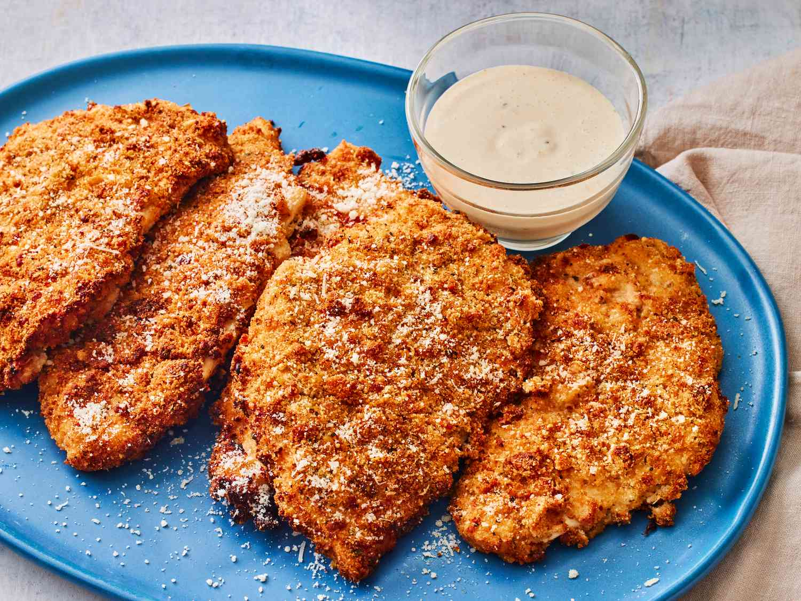

Crispy Caesar Chicken Cutlets

Description
Crispy Caesar Chicken Cutlets offer a delightful fusion of golden-brown, breaded chicken with the bold flavors of Caesar dressing.
Seasoned to perfection and pan-fried for a satisfying crunch, these cutlets provide a quick and delicious meal.
The savory taste of well-seasoned chicken harmonizes with the distinctive Caesar dressing, creating a mouthwatering experience.
Perfect for a quick and tasty dinner, pair them with a salad or your preferred side for a satisfying culinary delight.
Ingredients
- 1 cup (3 ounches) seasoned croutons (such as Texas Toast), crumbled
- 1/2 sup seasoned breadcrumbs
- 1/2 cup pre-shredded Parmesan cheese, plus more for serving
- 2 teaspoons lemon pepper seasoning mix
- 2 teaspoons dried oregano
- 1 teaspoons dried mustard
- 3/4 teaspoons garlic power
- 1/2 teaspoons onion poweder
- 1/4 teaspoon cayenne pepper
- 1 cup creamy Caesar dressing (such as Ken's Steak House), plus more for serving
- 1 cup Whole milk
- Cooking spray
- 6 (4 ounces) chicken breasts cutlets, patted dry
Steps
-
Gather all ingridients
-
Process Croutons in a food Processor until finely crumbled, about 8 pulses
- Prepare dredging station. Stir together croutons, breadcrumbs, Parmesan cheese, lemon pepper, oregano, mustard, garlic powder, onion powder, and cayenne in a shallow bowl.
Whisk together Caesar dressing and milk until smooth in a separate shallow bowl. Set aside.
-
Preheat the air fryer to 390 degrees F for 2 minutes (200 degrees C). Lightly coat the air fryer basket with cooking spray.
-
Working with 1 cutlet at a time, fully submerge each cutlet into dressing mixture, shaking off excess. Dredge cutlets in crouton mixture, pressing firmly until evenly coated on both sides.
Place on a plate in an even layer.
-
Working in batches, add 2 cutlets to basket in one even layer, and cook until golden brown and cooked through, 10 to 12 minutes, flipping halfway through.
-
Transfer to a serving platter, and repeat with remaining cutlets. Serve with additional Parmesan cheese and dressing.